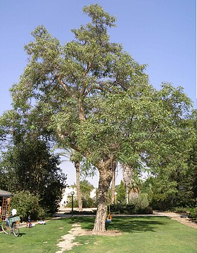

Tipuana (Tipuana tipu) no Brasil está profundamente ligada à urbanização,
ao planejamento das grandes metrópoles
no século XX e até ao nascimento
do movimento ambientalista nacional.
Abaixo está a cronologia de como essa
espécie exótica se transformou em um
símbolo das ruas brasileiras
Nativa das florestas subtropicais e temperadas do norte da Argentina e da Bolívia, a árvore já chamava a atenção por sua resiliência e imponência. Curiosamente, estudos de botânicos mostram que a Tipuana se adaptou tão bem ao solo e clima brasileiros que ela costuma crescer mais rápido e atingir portes maiores no Brasil do que em sua própria terra natal.

TIPUANA
PAU-FERRO
BANANA
MANGA
JACA
PITANGA